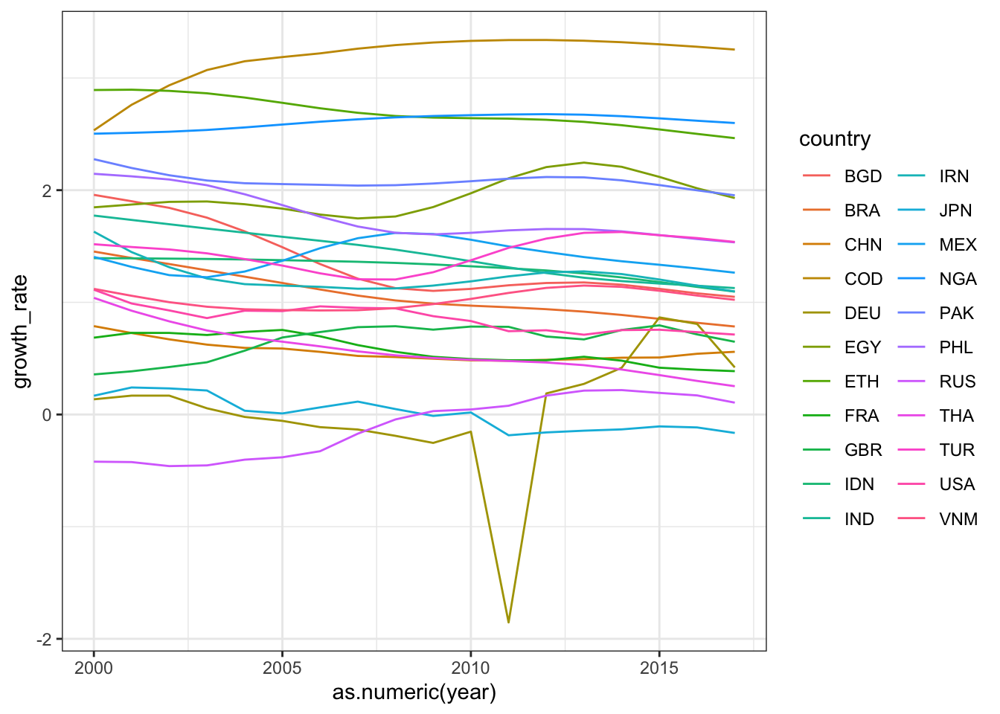
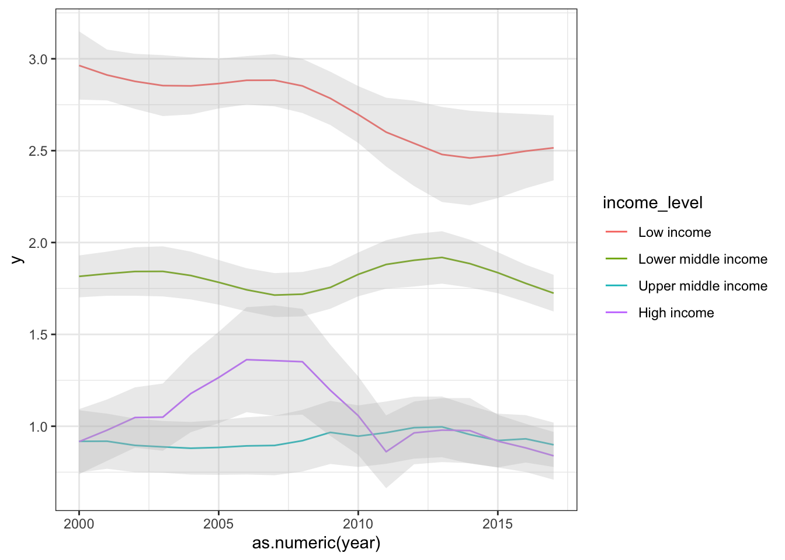
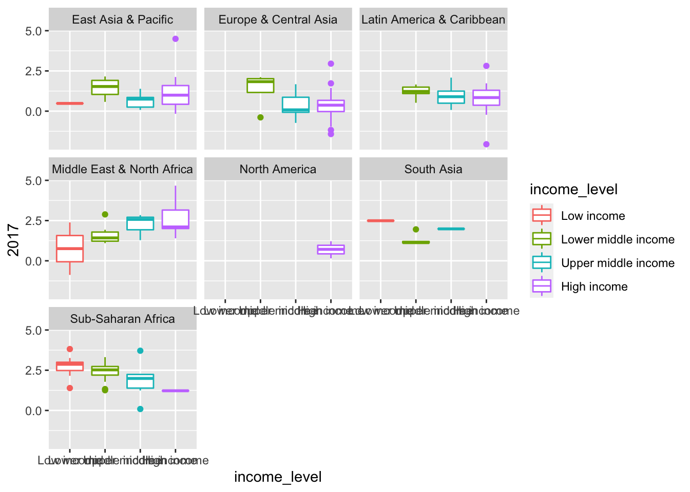

Main tidyr functions
pivot_longer(): “lengthen” data by collapsing several columns into two.pivot_wider(): “widen” data by expanding two columns into multiple columns


Now that we have dipped our feet into plots and stats in R, I think you are getting a better sense of the fact that ‘wrangling’ or ‘manipulating’ data is one of the biggest steps to becoming proficient in R and all that it has to offer.
For example, for any given analysis, you may have to subset data, filter out certain data that don’t meet some criteria, focus in on a select set of variables of interest, calculate means, and variance for different groups, etc. etc.
These tasks are where the packages dplyr, tidyr and other packages in the tidyverse–a series of packages designed for all kinds of data tasks. This also includes the popular ggplot2 package for graphics.
The tidyverse packages are constructed by Hadley Wickam. There are several books that cover how to use these packages, including R for Data Science which is available for free as an online book

In this module, we’ll be learning some functions from the packages dplyr and tidyr.
We will do this by playing with data from the World Bank.
One can install each package separately, but you can also just install all “tidyverse” packages simply by running this command:
install.packages("tidyverse")
install.packages("wbstats")Note that this simply downloads the packages onto your computer. When you are ready to use them, you will have to load the package onto the environment by running the function
You now have the package downloaded on your computer, but to actually
use it, you have to load the package. We can load the entire
tidyverse package (or, if you prefer, you can just load the
tidyr package).
library(wbstats)
library(tidyverse)## ── Attaching packages ─────────────────────────────────────── tidyverse 1.3.2 ──
## ✔ ggplot2 3.3.6 ✔ purrr 0.3.4
## ✔ tibble 3.1.8 ✔ dplyr 1.0.10
## ✔ tidyr 1.2.1 ✔ stringr 1.4.1
## ✔ readr 2.1.2 ✔ forcats 0.5.2
## ── Conflicts ────────────────────────────────────────── tidyverse_conflicts() ──
## ✖ dplyr::filter() masks stats::filter()
## ✖ dplyr::lag() masks stats::lag()Two important thing to notice here. First, the
message tells you what packages were actually loaded as part of the
tidyverse “metapackage”. You see that this includes 8 packages:
ggplot2,tibble, tidyr, readr, purrr, dplyr, stringr, and forcats.
Second, the message tells you that there are two functions in the
dplyr package that conflict with existing functions:
filter() and lag(). This is sometimes very
important to know! This means that the filter() function
works differently before and after loading this package.
Some things to know about getting started with ‘tidyverse’
Pipe Operator (
%>%): tidyverse makes use of the pipe operator%>%, which allows you to carry over the output of one function to the next function. This can make series of data manipulation sequences much more efficient.Tibbles: “tibble” is a special class of dataframe that is used in tidyverse. It is largely the same as a dataframe but it has some features (or rather, lack of features) that make for ‘defensive coding’. That is, it forces you to avoid dangerous operations, such as changing variable names or types (you have to explicitly do this) or allow “partial matching”.
To learn more about tibbles, start here
I use tidyr mostly for reshaping data to move between “long-format” and “wide-format” data.
Here is link to the tidyr cheat sheet: https://github.com/rstudio/cheatsheets/blob/master/tidyr.pdf
pivot_longer(): “lengthen” data by collapsing several
columns into two.pivot_wider(): “widen” data by expanding two columns
into multiple columnsdplyr is a package that helps you wrangle your data into shape to aid you in the process of visualization and analysis.
Here is a link to the dplyr cheat sheet: https://github.com/rstudio/cheatsheets/blob/main/data-transformation.pdf
select() select columns by criteriafilter() filter rows by criteriamutate(): add new variable using functionssummarise(): calculate summary statistic for a given
variablearrange(): change order of rowsgroup_by(): run any of above function ‘by group’
defined using criterialeft_join(), right_join(),
inner_join(), full_join(): set of functions to
help merge data tables.nest_join(): create nested datasets (advanced… I don’t
know how to use this yet)pivot_wider()Data come in all kinds of formats. A “long-format” data is where you have multiple rows of measures for a given subject/entity.
Let’s say you measured the height of individual trees repeatedly at
different ages. This is what the Loblolly data set (in base
R) shows:
head(Loblolly)## height age Seed
## 1 4.51 3 301
## 15 10.89 5 301
## 29 28.72 10 301
## 43 41.74 15 301
## 57 52.70 20 301
## 71 60.92 25 301Now let’s say we want to reformat this data so that we have one row
for each individual (seed), with heights at different ages across
different columns. Here’s how we’d do it with
pivot_wider().
pivot_wider(Loblolly, id_cols=Seed, names_from=age, values_from=height)## # A tibble: 14 × 7
## Seed `3` `5` `10` `15` `20` `25`
## <ord> <dbl> <dbl> <dbl> <dbl> <dbl> <dbl>
## 1 301 4.51 10.9 28.7 41.7 52.7 60.9
## 2 303 4.55 10.9 29.1 42.8 53.9 63.4
## 3 305 4.79 11.4 30.2 44.4 55.8 64.1
## 4 307 3.91 9.48 25.7 39.1 50.8 59.1
## 5 309 4.81 11.2 28.7 41.7 53.3 63.0
## 6 311 3.88 9.4 26.0 39.6 51.5 59.6
## 7 315 4.32 10.4 27.2 40.8 51.3 60.1
## 8 319 4.57 10.6 27.9 41.1 52.4 60.7
## 9 321 3.77 9.03 25.4 39.0 49.8 60.3
## 10 323 4.33 10.8 29.0 42.4 53.2 61.6
## 11 325 4.38 10.5 27.9 40.2 50.1 58.5
## 12 327 4.12 9.92 26.5 37.8 48.4 56.8
## 13 329 3.93 9.34 26.1 37.8 48.3 56.4
## 14 331 3.46 9.05 25.8 39.2 49.1 59.5So, what happened here? The minimal arguments that are required in here are:
data: (self explanatory)id_cols: The column that contains the “ID”, or the
variable you want to assign as rows in the wide-format (i.e., each
unique value of this variable will be separate rows). In this case, this
is “Seed”names_from: The column that you want to expand into
different columns. In this case, it is “age” because you want to see the
heights of each tree at different ages as different columns.values_from: The column that will have the values for
each ID x names_from combination. In this case, this is “height”pivot_longer()“Wide-format” data is one in which each row is a subject/entity that is measured repeatedly, and each measurement appears on different columns.
Take for example the billboard dataset, which is part of
the tidyr package. It contains data on rankings of songs on the
Billboard Top 100 in the year 2000. It is in wide-format:
billboard## # A tibble: 317 × 79
## artist track date.ent…¹ wk1 wk2 wk3 wk4 wk5 wk6 wk7 wk8 wk9
## <chr> <chr> <date> <dbl> <dbl> <dbl> <dbl> <dbl> <dbl> <dbl> <dbl> <dbl>
## 1 2 Pac Baby… 2000-02-26 87 82 72 77 87 94 99 NA NA
## 2 2Ge+h… The … 2000-09-02 91 87 92 NA NA NA NA NA NA
## 3 3 Doo… Kryp… 2000-04-08 81 70 68 67 66 57 54 53 51
## 4 3 Doo… Loser 2000-10-21 76 76 72 69 67 65 55 59 62
## 5 504 B… Wobb… 2000-04-15 57 34 25 17 17 31 36 49 53
## 6 98^0 Give… 2000-08-19 51 39 34 26 26 19 2 2 3
## 7 A*Tee… Danc… 2000-07-08 97 97 96 95 100 NA NA NA NA
## 8 Aaliy… I Do… 2000-01-29 84 62 51 41 38 35 35 38 38
## 9 Aaliy… Try … 2000-03-18 59 53 38 28 21 18 16 14 12
## 10 Adams… Open… 2000-08-26 76 76 74 69 68 67 61 58 57
## # … with 307 more rows, 67 more variables: wk10 <dbl>, wk11 <dbl>, wk12 <dbl>,
## # wk13 <dbl>, wk14 <dbl>, wk15 <dbl>, wk16 <dbl>, wk17 <dbl>, wk18 <dbl>,
## # wk19 <dbl>, wk20 <dbl>, wk21 <dbl>, wk22 <dbl>, wk23 <dbl>, wk24 <dbl>,
## # wk25 <dbl>, wk26 <dbl>, wk27 <dbl>, wk28 <dbl>, wk29 <dbl>, wk30 <dbl>,
## # wk31 <dbl>, wk32 <dbl>, wk33 <dbl>, wk34 <dbl>, wk35 <dbl>, wk36 <dbl>,
## # wk37 <dbl>, wk38 <dbl>, wk39 <dbl>, wk40 <dbl>, wk41 <dbl>, wk42 <dbl>,
## # wk43 <dbl>, wk44 <dbl>, wk45 <dbl>, wk46 <dbl>, wk47 <dbl>, wk48 <dbl>, …pivot_longer(billboard, cols=starts_with("wk"), names_to="week", values_to="rank")## # A tibble: 24,092 × 5
## artist track date.entered week rank
## <chr> <chr> <date> <chr> <dbl>
## 1 2 Pac Baby Don't Cry (Keep... 2000-02-26 wk1 87
## 2 2 Pac Baby Don't Cry (Keep... 2000-02-26 wk2 82
## 3 2 Pac Baby Don't Cry (Keep... 2000-02-26 wk3 72
## 4 2 Pac Baby Don't Cry (Keep... 2000-02-26 wk4 77
## 5 2 Pac Baby Don't Cry (Keep... 2000-02-26 wk5 87
## 6 2 Pac Baby Don't Cry (Keep... 2000-02-26 wk6 94
## 7 2 Pac Baby Don't Cry (Keep... 2000-02-26 wk7 99
## 8 2 Pac Baby Don't Cry (Keep... 2000-02-26 wk8 NA
## 9 2 Pac Baby Don't Cry (Keep... 2000-02-26 wk9 NA
## 10 2 Pac Baby Don't Cry (Keep... 2000-02-26 wk10 NA
## # … with 24,082 more rowsWhat happened here?
The minimal arguments that are required in here are:
data: (self explanatory)cols: The columns that we want to collapse into a
single column. Here, we want all the columns that start with “wk”, which
contain the ranking of that song in that week. tidyverse has a friendly
function called starts_with() that we use here. An
alternative way to do this would be to exclude all the other
columns, which we could do with
-c(artist, track, date.entered)names_to: The name of a new column that will contain
names of the columns that you collapsed. Here, naming this “week” makes
sense.values_to: The name of a new column that will have the
values for each ID x names_from combination. In this case, this is
“rank”The World Bank actually makes it very easy to download a huge amount
of data very easily. You could just go to the World Bankd Open Data site and
search for data and download them in a few clicks. There are even
packages such as WDI and wbstats that allow
you to query and pull data from this site from within R.
However, for the purposes of this exercise, we will deal with several datasets that are included in the packages we have loaded above.
world_bank_pop: Population data from World Bank
(2000-2017)First is the world_bank_pop dataset that is included in
the tidyr package (which is part of the the tidyverse
suite). Start by pulling up the help file for the dataset
?world_bank_popLet’s take a peak at the data, which is in “tibble” format:
world_bank_pop## # A tibble: 1,056 × 20
## country indic…¹ `2000` `2001` `2002` `2003` `2004` `2005` `2006` `2007`
## <chr> <chr> <dbl> <dbl> <dbl> <dbl> <dbl> <dbl> <dbl> <dbl>
## 1 ABW SP.URB… 4.24e4 4.30e4 4.37e4 4.42e4 4.47e+4 4.49e+4 4.49e+4 4.47e+4
## 2 ABW SP.URB… 1.18e0 1.41e0 1.43e0 1.31e0 9.51e-1 4.91e-1 -1.78e-2 -4.35e-1
## 3 ABW SP.POP… 9.09e4 9.29e4 9.50e4 9.70e4 9.87e+4 1.00e+5 1.01e+5 1.01e+5
## 4 ABW SP.POP… 2.06e0 2.23e0 2.23e0 2.11e0 1.76e+0 1.30e+0 7.98e-1 3.84e-1
## 5 AFG SP.URB… 4.44e6 4.65e6 4.89e6 5.16e6 5.43e+6 5.69e+6 5.93e+6 6.15e+6
## 6 AFG SP.URB… 3.91e0 4.66e0 5.13e0 5.23e0 5.12e+0 4.77e+0 4.12e+0 3.65e+0
## 7 AFG SP.POP… 2.01e7 2.10e7 2.20e7 2.31e7 2.41e+7 2.51e+7 2.59e+7 2.66e+7
## 8 AFG SP.POP… 3.49e0 4.25e0 4.72e0 4.82e0 4.47e+0 3.87e+0 3.23e+0 2.76e+0
## 9 AGO SP.URB… 8.23e6 8.71e6 9.22e6 9.77e6 1.03e+7 1.09e+7 1.15e+7 1.21e+7
## 10 AGO SP.URB… 5.44e0 5.59e0 5.70e0 5.76e0 5.75e+0 5.69e+0 4.92e+0 4.89e+0
## # … with 1,046 more rows, 10 more variables: `2008` <dbl>, `2009` <dbl>,
## # `2010` <dbl>, `2011` <dbl>, `2012` <dbl>, `2013` <dbl>, `2014` <dbl>,
## # `2015` <dbl>, `2016` <dbl>, `2017` <dbl>, and abbreviated variable name
## # ¹indicatorNotice that each country is repeated across 4 rows. This is because there are actually 4 different “indicators” for each country, and so each country x indicator combination takes up a row. The rest of the columns are years, from 2000 to 2017.
Also notice that the numbers in the column names have a backquote, or “`” around them. In R, this allows numbers to be interpreted as text (and column names have to be text).
So, if you wanted to pull up the “2001” column, this will NOT work…
world_bank_pop$2001…but this will work
world_bank_pop$`2001`join functionsWe are going to start by diving into the world_bank_pop
dataset.
Let’s take a peek at the dataset again and see what we have…
world_bank_pop## # A tibble: 1,056 × 20
## country indic…¹ `2000` `2001` `2002` `2003` `2004` `2005` `2006` `2007`
## <chr> <chr> <dbl> <dbl> <dbl> <dbl> <dbl> <dbl> <dbl> <dbl>
## 1 ABW SP.URB… 4.24e4 4.30e4 4.37e4 4.42e4 4.47e+4 4.49e+4 4.49e+4 4.47e+4
## 2 ABW SP.URB… 1.18e0 1.41e0 1.43e0 1.31e0 9.51e-1 4.91e-1 -1.78e-2 -4.35e-1
## 3 ABW SP.POP… 9.09e4 9.29e4 9.50e4 9.70e4 9.87e+4 1.00e+5 1.01e+5 1.01e+5
## 4 ABW SP.POP… 2.06e0 2.23e0 2.23e0 2.11e0 1.76e+0 1.30e+0 7.98e-1 3.84e-1
## 5 AFG SP.URB… 4.44e6 4.65e6 4.89e6 5.16e6 5.43e+6 5.69e+6 5.93e+6 6.15e+6
## 6 AFG SP.URB… 3.91e0 4.66e0 5.13e0 5.23e0 5.12e+0 4.77e+0 4.12e+0 3.65e+0
## 7 AFG SP.POP… 2.01e7 2.10e7 2.20e7 2.31e7 2.41e+7 2.51e+7 2.59e+7 2.66e+7
## 8 AFG SP.POP… 3.49e0 4.25e0 4.72e0 4.82e0 4.47e+0 3.87e+0 3.23e+0 2.76e+0
## 9 AGO SP.URB… 8.23e6 8.71e6 9.22e6 9.77e6 1.03e+7 1.09e+7 1.15e+7 1.21e+7
## 10 AGO SP.URB… 5.44e0 5.59e0 5.70e0 5.76e0 5.75e+0 5.69e+0 4.92e+0 4.89e+0
## # … with 1,046 more rows, 10 more variables: `2008` <dbl>, `2009` <dbl>,
## # `2010` <dbl>, `2011` <dbl>, `2012` <dbl>, `2013` <dbl>, `2014` <dbl>,
## # `2015` <dbl>, `2016` <dbl>, `2017` <dbl>, and abbreviated variable name
## # ¹indicatorI want to start by looking at how many unique countries we actually have here.
length(unique(world_bank_pop$country)) #this gives us the number of unique values in the "country" column## [1] 264You can see that there are way more “countries” here than there are in the world. As of 2022, there are 193 countries in the United Nations, though if we add soverign states that are not recognized by UN (e.g., Taiwan, Kosovo, etc.), the list is about 206… and there are more if we include disputed territories.
The reason the World Bank data has even more than that is because some of the “countries” include “aggregates” like “Arab World” or “High-income Countries”.
Unfortunately, the world_bank_pop dataset does not
include any variables that allow us to differentiate the countries from
the aggregates! However, we can solve this problem by pulling the
metadata for countries from the World Bank. We can do this by using the
wb_countries() function from the wbstats
package.
Let’s pull the country metadata and save it as an object called “metadata”:
metadata=wb_countries()metadata## # A tibble: 299 × 18
## iso3c iso2c country capit…¹ longi…² latit…³ regio…⁴ regio…⁵ region admin…⁶
## <chr> <chr> <chr> <chr> <dbl> <dbl> <chr> <chr> <chr> <chr>
## 1 ABW AW Aruba Oranje… -70.0 12.5 LCN ZJ Latin… <NA>
## 2 AFE ZH Africa Ea… <NA> NA NA <NA> <NA> Aggre… <NA>
## 3 AFG AF Afghanist… Kabul 69.2 34.5 SAS 8S South… SAS
## 4 AFR A9 Africa <NA> NA NA <NA> <NA> Aggre… <NA>
## 5 AFW ZI Africa We… <NA> NA NA <NA> <NA> Aggre… <NA>
## 6 AGO AO Angola Luanda 13.2 -8.81 SSF ZG Sub-S… SSA
## 7 ALB AL Albania Tirane 19.8 41.3 ECS Z7 Europ… ECA
## 8 AND AD Andorra Andorr… 1.52 42.5 ECS Z7 Europ… <NA>
## 9 ARB 1A Arab World <NA> NA NA <NA> <NA> Aggre… <NA>
## 10 ARE AE United Ar… Abu Dh… 54.4 24.5 MEA ZQ Middl… <NA>
## # … with 289 more rows, 8 more variables: admin_region_iso2c <chr>,
## # admin_region <chr>, income_level_iso3c <chr>, income_level_iso2c <chr>,
## # income_level <chr>, lending_type_iso3c <chr>, lending_type_iso2c <chr>,
## # lending_type <chr>, and abbreviated variable names ¹capital_city,
## # ²longitude, ³latitude, ⁴region_iso3c, ⁵region_iso2c, ⁶admin_region_iso3chead(metadata$region)## [1] "Latin America & Caribbean" "Aggregates"
## [3] "South Asia" "Aggregates"
## [5] "Aggregates" "Sub-Saharan Africa"So this column shows us the “Aggregates”.
metadata %>% dplyr::filter(region != "Aggregates")## # A tibble: 218 × 18
## iso3c iso2c country capit…¹ longi…² latit…³ regio…⁴ regio…⁵ region admin…⁶
## <chr> <chr> <chr> <chr> <dbl> <dbl> <chr> <chr> <chr> <chr>
## 1 ABW AW Aruba Oranje… -70.0 12.5 LCN ZJ Latin… <NA>
## 2 AFG AF Afghanist… Kabul 69.2 34.5 SAS 8S South… SAS
## 3 AGO AO Angola Luanda 13.2 -8.81 SSF ZG Sub-S… SSA
## 4 ALB AL Albania Tirane 19.8 41.3 ECS Z7 Europ… ECA
## 5 AND AD Andorra Andorr… 1.52 42.5 ECS Z7 Europ… <NA>
## 6 ARE AE United Ar… Abu Dh… 54.4 24.5 MEA ZQ Middl… <NA>
## 7 ARG AR Argentina Buenos… -58.4 -34.6 LCN ZJ Latin… LAC
## 8 ARM AM Armenia Yerevan 44.5 40.2 ECS Z7 Europ… ECA
## 9 ASM AS American … Pago P… -171. -14.3 EAS Z4 East … EAP
## 10 ATG AG Antigua a… Saint … -61.8 17.1 LCN ZJ Latin… <NA>
## # … with 208 more rows, 8 more variables: admin_region_iso2c <chr>,
## # admin_region <chr>, income_level_iso3c <chr>, income_level_iso2c <chr>,
## # income_level <chr>, lending_type_iso3c <chr>, lending_type_iso2c <chr>,
## # lending_type <chr>, and abbreviated variable names ¹capital_city,
## # ²longitude, ³latitude, ⁴region_iso3c, ⁵region_iso2c, ⁶admin_region_iso3cmetadata %>%
dplyr::filter(region != "Aggregates") %>%
select(iso3c, iso2c, country, region)## # A tibble: 218 × 4
## iso3c iso2c country region
## <chr> <chr> <chr> <chr>
## 1 ABW AW Aruba Latin America & Caribbean
## 2 AFG AF Afghanistan South Asia
## 3 AGO AO Angola Sub-Saharan Africa
## 4 ALB AL Albania Europe & Central Asia
## 5 AND AD Andorra Europe & Central Asia
## 6 ARE AE United Arab Emirates Middle East & North Africa
## 7 ARG AR Argentina Latin America & Caribbean
## 8 ARM AM Armenia Europe & Central Asia
## 9 ASM AS American Samoa East Asia & Pacific
## 10 ATG AG Antigua and Barbuda Latin America & Caribbean
## # … with 208 more rowscountries=metadata %>%
dplyr::filter(region != "Aggregates") %>%
select(iso3c, iso2c, country.name=country, region, income_level) %>%
mutate(income_level=factor(income_level, levels=c("Low income", "Lower middle income", "Upper middle income", "High income")))popdat_countries=inner_join(world_bank_pop, countries, by=c("country" = "iso3c"))
popdat_countries## # A tibble: 868 × 24
## country indic…¹ `2000` `2001` `2002` `2003` `2004` `2005` `2006` `2007`
## <chr> <chr> <dbl> <dbl> <dbl> <dbl> <dbl> <dbl> <dbl> <dbl>
## 1 ABW SP.URB… 4.24e4 4.30e4 4.37e4 4.42e4 4.47e+4 4.49e+4 4.49e+4 4.47e+4
## 2 ABW SP.URB… 1.18e0 1.41e0 1.43e0 1.31e0 9.51e-1 4.91e-1 -1.78e-2 -4.35e-1
## 3 ABW SP.POP… 9.09e4 9.29e4 9.50e4 9.70e4 9.87e+4 1.00e+5 1.01e+5 1.01e+5
## 4 ABW SP.POP… 2.06e0 2.23e0 2.23e0 2.11e0 1.76e+0 1.30e+0 7.98e-1 3.84e-1
## 5 AFG SP.URB… 4.44e6 4.65e6 4.89e6 5.16e6 5.43e+6 5.69e+6 5.93e+6 6.15e+6
## 6 AFG SP.URB… 3.91e0 4.66e0 5.13e0 5.23e0 5.12e+0 4.77e+0 4.12e+0 3.65e+0
## 7 AFG SP.POP… 2.01e7 2.10e7 2.20e7 2.31e7 2.41e+7 2.51e+7 2.59e+7 2.66e+7
## 8 AFG SP.POP… 3.49e0 4.25e0 4.72e0 4.82e0 4.47e+0 3.87e+0 3.23e+0 2.76e+0
## 9 AGO SP.URB… 8.23e6 8.71e6 9.22e6 9.77e6 1.03e+7 1.09e+7 1.15e+7 1.21e+7
## 10 AGO SP.URB… 5.44e0 5.59e0 5.70e0 5.76e0 5.75e+0 5.69e+0 4.92e+0 4.89e+0
## # … with 858 more rows, 14 more variables: `2008` <dbl>, `2009` <dbl>,
## # `2010` <dbl>, `2011` <dbl>, `2012` <dbl>, `2013` <dbl>, `2014` <dbl>,
## # `2015` <dbl>, `2016` <dbl>, `2017` <dbl>, iso2c <chr>, country.name <chr>,
## # region <chr>, income_level <fct>, and abbreviated variable name ¹indicatorfilter() and
select()As mentioned above (Section 1.1), each row is a country x indicator combination, with 4 different indicators. The indicators are:
SP.POP.GROW = population growth
SP.POP.TOTL = total population
SP.URB.GROW = urban population growth
SP.URB.TOTL = total urban population
popdat_countries %>%
dplyr::filter(indicator=="SP.POP.TOTL") ## # A tibble: 217 × 24
## country indicator `2000` `2001` `2002` `2003` `2004` `2005` `2006` `2007`
## <chr> <chr> <dbl> <dbl> <dbl> <dbl> <dbl> <dbl> <dbl> <dbl>
## 1 ABW SP.POP.TOTL 90853 9.29e4 9.50e4 9.70e4 9.87e4 1.00e5 1.01e5 1.01e5
## 2 AFG SP.POP.TOTL 20093756 2.10e7 2.20e7 2.31e7 2.41e7 2.51e7 2.59e7 2.66e7
## 3 AGO SP.POP.TOTL 16440924 1.70e7 1.76e7 1.82e7 1.89e7 1.96e7 2.03e7 2.10e7
## 4 ALB SP.POP.TOTL 3089027 3.06e6 3.05e6 3.04e6 3.03e6 3.01e6 2.99e6 2.97e6
## 5 AND SP.POP.TOTL 65390 6.73e4 7.00e4 7.32e4 7.62e4 7.89e4 8.10e4 8.27e4
## 6 ARE SP.POP.TOTL 3154925 3.33e6 3.51e6 3.74e6 4.09e6 4.58e6 5.24e6 6.04e6
## 7 ARG SP.POP.TOTL 37057452 3.75e7 3.79e7 3.83e7 3.87e7 3.91e7 3.96e7 4.00e7
## 8 ARM SP.POP.TOTL 3069588 3.05e6 3.03e6 3.02e6 3.00e6 2.98e6 2.96e6 2.93e6
## 9 ASM SP.POP.TOTL 57521 5.82e4 5.87e4 5.91e4 5.93e4 5.91e4 5.86e4 5.79e4
## 10 ATG SP.POP.TOTL 83584 8.51e4 8.63e4 8.73e4 8.83e4 8.93e4 9.03e4 9.14e4
## # … with 207 more rows, and 14 more variables: `2008` <dbl>, `2009` <dbl>,
## # `2010` <dbl>, `2011` <dbl>, `2012` <dbl>, `2013` <dbl>, `2014` <dbl>,
## # `2015` <dbl>, `2016` <dbl>, `2017` <dbl>, iso2c <chr>, country.name <chr>,
## # region <chr>, income_level <fct>pop_totals=popdat_countries %>%
dplyr::filter(indicator=="SP.POP.TOTL") upper_pop=pop_totals %>%
pull(`2017`) %>%
quantile(., probs=0.90, na.rm=T)
upper_pop## 90%
## 63286844large_countries=pop_totals %>%
dplyr::filter(`2017` > upper_pop) %>%
select(country)
large_countries## # A tibble: 22 × 1
## country
## <chr>
## 1 BGD
## 2 BRA
## 3 CHN
## 4 COD
## 5 DEU
## 6 EGY
## 7 ETH
## 8 FRA
## 9 GBR
## 10 IDN
## # … with 12 more rowspopgrowth_large=popdat_countries %>%
dplyr::filter(indicator=="SP.POP.GROW") %>%
right_join(., large_countries, keep=FALSE) ## Joining, by = "country"popgrowth_large %>% select(-indicator, -country.name, -iso2c, -region, -income_level) %>% pivot_longer(!country, names_to="year", values_to="growth_rate")## # A tibble: 396 × 3
## country year growth_rate
## <chr> <chr> <dbl>
## 1 BGD 2000 1.96
## 2 BGD 2001 1.90
## 3 BGD 2002 1.84
## 4 BGD 2003 1.75
## 5 BGD 2004 1.63
## 6 BGD 2005 1.49
## 7 BGD 2006 1.34
## 8 BGD 2007 1.21
## 9 BGD 2008 1.13
## 10 BGD 2009 1.10
## # … with 386 more rowspopgrowth_plot=popgrowth_large %>%
select(-indicator, -country.name, -iso2c, -region, -income_level) %>%
pivot_longer(!country, names_to="year", values_to="growth_rate")
ggplot(popgrowth_plot, aes(x=as.numeric(year), y=growth_rate, color=country)) +
geom_line() +
theme_bw()
popgrowth_income=popdat_countries %>%
dplyr::filter(indicator=="SP.POP.GROW") %>%
dplyr::filter(is.na(income_level)==F) %>%
select(-indicator, -country.name, -iso2c, -region) %>%
pivot_longer(cols=-c(country, income_level), names_to="year", values_to="growth_rate") %>%
group_by(income_level, year) %>%
summarise(mean_se(growth_rate))## `summarise()` has grouped output by 'income_level'. You can override using the
## `.groups` argument.ggplot(popgrowth_income, aes(x=as.numeric(year), y=y, group=income_level)) +
geom_line(aes(color=income_level)) +
geom_ribbon(aes(ymin=ymin, ymax=ymax), alpha=0.3, fill="gray") +
theme_bw()
popdat_anova=popdat_countries %>%
dplyr::filter(indicator=="SP.POP.GROW") %>%
select(country, `2017`, region, income_level) %>%
dplyr::filter(income_level!="Not classified")
ggplot(popdat_anova, aes(x=income_level, y=`2017`)) +
geom_boxplot(aes(color=income_level)) +
facet_wrap(~region, nrow=3)## Warning: Removed 1 rows containing non-finite values (stat_boxplot).
lm.fit=lm(`2017`~region*income_level, data=popdat_anova)
summary(lm.fit)##
## Call:
## lm(formula = `2017` ~ region * income_level, data = popdat_anova)
##
## Residuals:
## Min 1Q Median 3Q Max
## -2.8376 -0.4021 0.0016 0.3416 3.2863
##
## Coefficients: (6 not defined because of singularities)
## Estimate
## (Intercept) 0.4811
## regionEurope & Central Asia -0.8591
## regionLatin America & Caribbean -0.4282
## regionMiddle East & North Africa 0.2746
## regionNorth America -0.5154
## regionSouth Asia 2.0097
## regionSub-Saharan Africa 2.2767
## income_levelLower middle income 0.9778
## income_levelUpper middle income 0.1715
## income_levelHigh income 0.7281
## regionEurope & Central Asia:income_levelLower middle income 0.7481
## regionLatin America & Caribbean:income_levelLower middle income 0.1674
## regionMiddle East & North Africa:income_levelLower middle income -0.1244
## regionNorth America:income_levelLower middle income NA
## regionSouth Asia:income_levelLower middle income -2.2031
## regionSub-Saharan Africa:income_levelLower middle income -1.3331
## regionEurope & Central Asia:income_levelUpper middle income 0.5305
## regionLatin America & Caribbean:income_levelUpper middle income 0.6975
## regionMiddle East & North Africa:income_levelUpper middle income 1.3060
## regionNorth America:income_levelUpper middle income NA
## regionSouth Asia:income_levelUpper middle income -0.6777
## regionSub-Saharan Africa:income_levelUpper middle income -1.0472
## regionEurope & Central Asia:income_levelHigh income NA
## regionLatin America & Caribbean:income_levelHigh income NA
## regionMiddle East & North Africa:income_levelHigh income 1.2067
## regionNorth America:income_levelHigh income NA
## regionSouth Asia:income_levelHigh income NA
## regionSub-Saharan Africa:income_levelHigh income -2.2619
## Std. Error
## (Intercept) 0.7844
## regionEurope & Central Asia 0.2520
## regionLatin America & Caribbean 0.2890
## regionMiddle East & North Africa 0.9607
## regionNorth America 0.5024
## regionSouth Asia 1.1093
## regionSub-Saharan Africa 0.8013
## income_levelLower middle income 0.8119
## income_levelUpper middle income 0.8268
## income_levelHigh income 0.8140
## regionEurope & Central Asia:income_levelLower middle income 0.5112
## regionLatin America & Caribbean:income_levelLower middle income 0.5005
## regionMiddle East & North Africa:income_levelLower middle income 1.0216
## regionNorth America:income_levelLower middle income NA
## regionSouth Asia:income_levelLower middle income 1.1735
## regionSub-Saharan Africa:income_levelLower middle income 0.8498
## regionEurope & Central Asia:income_levelUpper middle income 0.4127
## regionLatin America & Caribbean:income_levelUpper middle income 0.4293
## regionMiddle East & North Africa:income_levelUpper middle income 1.0938
## regionNorth America:income_levelUpper middle income NA
## regionSouth Asia:income_levelUpper middle income 1.3835
## regionSub-Saharan Africa:income_levelUpper middle income 0.9016
## regionEurope & Central Asia:income_levelHigh income NA
## regionLatin America & Caribbean:income_levelHigh income NA
## regionMiddle East & North Africa:income_levelHigh income 1.0233
## regionNorth America:income_levelHigh income NA
## regionSouth Asia:income_levelHigh income NA
## regionSub-Saharan Africa:income_levelHigh income 1.1422
## t value
## (Intercept) 0.613
## regionEurope & Central Asia -3.409
## regionLatin America & Caribbean -1.482
## regionMiddle East & North Africa 0.286
## regionNorth America -1.026
## regionSouth Asia 1.812
## regionSub-Saharan Africa 2.841
## income_levelLower middle income 1.204
## income_levelUpper middle income 0.207
## income_levelHigh income 0.894
## regionEurope & Central Asia:income_levelLower middle income 1.463
## regionLatin America & Caribbean:income_levelLower middle income 0.334
## regionMiddle East & North Africa:income_levelLower middle income -0.122
## regionNorth America:income_levelLower middle income NA
## regionSouth Asia:income_levelLower middle income -1.877
## regionSub-Saharan Africa:income_levelLower middle income -1.569
## regionEurope & Central Asia:income_levelUpper middle income 1.285
## regionLatin America & Caribbean:income_levelUpper middle income 1.625
## regionMiddle East & North Africa:income_levelUpper middle income 1.194
## regionNorth America:income_levelUpper middle income NA
## regionSouth Asia:income_levelUpper middle income -0.490
## regionSub-Saharan Africa:income_levelUpper middle income -1.161
## regionEurope & Central Asia:income_levelHigh income NA
## regionLatin America & Caribbean:income_levelHigh income NA
## regionMiddle East & North Africa:income_levelHigh income 1.179
## regionNorth America:income_levelHigh income NA
## regionSouth Asia:income_levelHigh income NA
## regionSub-Saharan Africa:income_levelHigh income -1.980
## Pr(>|t|)
## (Intercept) 0.540359
## regionEurope & Central Asia 0.000794 ***
## regionLatin America & Caribbean 0.140096
## regionMiddle East & North Africa 0.775333
## regionNorth America 0.306226
## regionSouth Asia 0.071588 .
## regionSub-Saharan Africa 0.004973 **
## income_levelLower middle income 0.229959
## income_levelUpper middle income 0.835899
## income_levelHigh income 0.372207
## regionEurope & Central Asia:income_levelLower middle income 0.144967
## regionLatin America & Caribbean:income_levelLower middle income 0.738416
## regionMiddle East & North Africa:income_levelLower middle income 0.903186
## regionNorth America:income_levelLower middle income NA
## regionSouth Asia:income_levelLower middle income 0.061960 .
## regionSub-Saharan Africa:income_levelLower middle income 0.118347
## regionEurope & Central Asia:income_levelUpper middle income 0.200181
## regionLatin America & Caribbean:income_levelUpper middle income 0.105822
## regionMiddle East & North Africa:income_levelUpper middle income 0.233935
## regionNorth America:income_levelUpper middle income NA
## regionSouth Asia:income_levelUpper middle income 0.624806
## regionSub-Saharan Africa:income_levelUpper middle income 0.246888
## regionEurope & Central Asia:income_levelHigh income NA
## regionLatin America & Caribbean:income_levelHigh income NA
## regionMiddle East & North Africa:income_levelHigh income 0.239757
## regionNorth America:income_levelHigh income NA
## regionSouth Asia:income_levelHigh income NA
## regionSub-Saharan Africa:income_levelHigh income 0.049090 *
## ---
## Signif. codes: 0 '***' 0.001 '**' 0.01 '*' 0.05 '.' 0.1 ' ' 1
##
## Residual standard error: 0.7844 on 193 degrees of freedom
## (1 observation deleted due to missingness)
## Multiple R-squared: 0.5674, Adjusted R-squared: 0.5204
## F-statistic: 12.06 on 21 and 193 DF, p-value: < 2.2e-16anova(lm.fit)## Analysis of Variance Table
##
## Response: 2017
## Df Sum Sq Mean Sq F value Pr(>F)
## region 6 131.828 21.9713 35.7109 < 2.2e-16 ***
## income_level 3 2.949 0.9830 1.5977 0.191299
## region:income_level 12 20.996 1.7497 2.8438 0.001279 **
## Residuals 193 118.744 0.6153
## ---
## Signif. codes: 0 '***' 0.001 '**' 0.01 '*' 0.05 '.' 0.1 ' ' 1